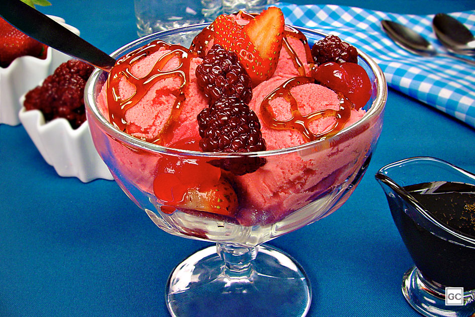

Sorvete caseiro de frutas vermelhas

Você sabia que é muito fácil fazer sorvete em casa?
Conheça a receita do sorvete caseiro de frutas vermelhas e experimente esta delícia!
Nos dias de calor, que tal se refrescar com uma delícia doce, caseira, geladinha e com sabor de fruta de verdade?
Com esse sorvete caseiro de frutas vermelhas você vai ter tudo isso e ainda surpreender a todos!
Veja como ele é simples de preparar:
Tempo: 45min (+2h30 de congelador)
Rendimento: 8 porções
Dificuldade: fácil
Ingredientes
- 1 caixa de gelatina em pó sabor frutas vermelhas
- 1 xícara (chá) de água quente
- 1 lata de leite condensado
- 3 potes de iogurte natural (510g)
- 1/2 xícara (chá) de xarope de groselha
- 1/2 xícara (chá) de morangos picados
- 1/2 xícara (chá) de amoras picadas
- 1 colher (sopa) de pó de liga neutra
- 1 colher (chá) de emulsificante
Modo de Preparo
Dissolva a gelatina na água quente e bata no liquidificador com o leite condensado, o iogurte, o xarope, o morango, a amora e a liga neutra até homogeneizar.
Despeje em um pote com tampa e leve ao congelador por 30 minutos.
Retire, adicione o emulsificante e bata na batedeira, em velocidade média, por 5 minutos.
Repita o processo mais 2 vezes, levando ao congelador por 30 minutos antes de bater novamente.
Retire e se desejar, sirva acompanhado de frutas vermelhas e regado com calda para sorvete.
Visite o site original da receita